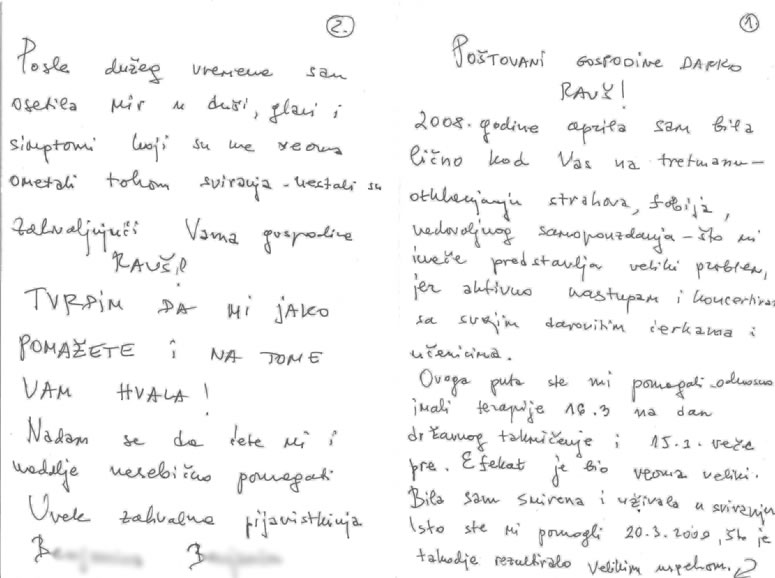

|
|
|
CENTAR ZA HIPNOZU RAUSCH
P. PRERADOVIĆA 21
42 000 VARAŽDIN
CROATIA, tel. 00385 91 529 2547
ŠTO PODRAZUMIJEVAMO POD HIPNOZOM?
Hipnoza je stara kao i čovječanstvo. Već su Sumerani, najstariji kulturni narod svijeta, primjenjivali hipnozu na način koji se i danas koristi. Kod hipnoze se često govori o spavanju (stanju sna), iako ona u biti nema nikakve veze sa običnim spavanjem. Točno je da se pritom radi o stanju sličnom spavanju u kojem nismo niti budni, niti ne spavamo. To stanje je stanje djelomično aktivne svijesti, koja omogućuje direktni kontakt sa podsviješću. Hipnotizer sugestivnim utjecajem izaziva stanje slično spavanju, koje privremeno mijenja stanje svijesti, pamćenje te psihičke reakcije.
Sugestije koje u značajnoj mjeri idu protiv osobnosti su isključene!
Kako doživljavamo hipnozu?
Mnogi ljudi su uzbuđeni ili prestrašeni već pri samom spomenu hipnoze. Oni, naime, ne znaju
što će se dogoditi, niti što ih očekuje. Neki su nakon hipnotičkog tretmana gotovo
razočarani, jer smatraju da nisu doživjeli ništa posebno.
Zašto je tako?
Kod spavanja svaki put proživljavamo hipnotična stanja – fazu između stanja budnosti i
sna. To nam je stanje stoga poznato i ne predstavlja nam ništa novo. Svako tko vozi
automobil se susreo s time, vozimo se poznatim putem, lutamo u mislima i odjednom se
nalazimo pred ciljem, bez da zapravo znamo kako smo do njega došli. Doživjeli smo hipnotično
stanje s vremenskim gubitkom. Isto proživljavamo i kada intenzivno čitamo neku knjigu ili
gledamo film. Hipnotičko stanje se može pojaviti svugdje, i ne moramo ga se stoga bojati.
Ovisno o tome što se hipnozom namjerava, mogu se doseći različita dubinska stanja. Na primjer, u odvikavanju od pušenja ili u kontroli prehrane dovoljna je lagana do srednja hipnoza. Za razliku od toga kod operacije je potrebna vrlo duboka hipnoza.
Svijest u različitim fazama hipnotičkog stanja:
stanje budnosti
- Naša je svijest u potpunosti prisutna i ona filtrira vanjske podražaje. Prihvaćamo samo ono što nam je zaista bitno.
lagana hipnoza
- Ovdje je naša svijest već lagano ograničena. Čovjek koji se hipnotizira koncentrira se na jednu točku, ali je još svjestan svega. Međutim, pristup svijesti je srednji trans
- Pritom je svijest već vrlo ograničena. Sugestije se već dobro prihvaćaju. Sada su moguće jednostavne hipnotizerske zapovijedi (nalozi), iako ih svijest još uvijek filtrira.
CENTAR ZA HIPNOZU RAUSCH
CROATIA, tel. 00385 91 529 2547

katalepsija ili duboki trans
- Sada je svijest gotovo sasvim isključena, dok se kritička sposobnost kreće oko ništice. Sada su moguće vizualne i zvučne halucinacije kakve su nam poznate iz show-programa. Sugestije koje su u značajnoj mjeri usmjerene protiv vlastite osobnosti nisu moguće. Često dolazi do amnezije (gubitka pamćenja). U pravilu otprilike jedna trećina svih sudionika u najkraćem vremenu dolazi u ovo stanje. Kod otprilike dvije trećine je potrebno dulje produbljivanje, ili pak je potrebno više uvoda kako bi se dospjelo u ovo duboko stanje transa.
budna hipnoza
- Hipnotizer nastavlja kontakt s osobom čak i ako ona prema vani djeluje potpuno budna. Hipnotizirana osoba može čak razgovarati sa trećim osobama. Izvana nije moguće primijetiti stanje hipnoze. Usprkos tome, hipnotizer može davati sugestije koje sasvim nesmetano dopiru do podsvijesti. Hipnotizirana osoba može doživjeti halucinacije i reagirati na potpuno besmislene sugestije, primjerice, na zahtjev hipnotizera otići u dućan kupiti nešto, dok u momentu kad odradi naredbu hipnotičko stanje prestaje.
Mogu li ostati trajno hipnotiziran?
Čak i u slučaju (što je vrlo nevjerojatno) da hipnotizer, iz kojih već razloga, zaboravi probuditi hipnotiziranu osobu, ili bi bio spriječen u tome, ona će se ipak probuditi. Znači, ne postoji opasnost da netko nenamjerno ostane pod stalnom hipnozom.
Zašto hipnoza ozdravljenja?
Živimo u vremenu značajnog tehnološkog razvoja i velikih preokreta. No, pošto u životu za sve plaćamo, plaćamo i za napredak. Često ga plaćamo našim zdravljem (stres, užurbanost, stalni pritisak). Sva ta duševna opterećenja veliki su uzročnici bolesti. Vegetativni živčani sustav pomalo izlazi iz ravnoteže, a čovjek postane bolestan… Hipnoza ozdravljenja pogotovo u području prepoznavanja i otklanjanja psihički uvjetovanih uzročnika bolesti obećava izvanredna dostignuća. Ona je usmjerena na cjelovito (holističko) liječenje duše i tijela, a njeni su uspjesi nadasve uvjerljivi.
Važno! Hipnoza je vrlo moćan instrument, no ona ne može ugasiti ili zamijeniti vlastitu volju, već ju može samo podržati.
HIPNOZOM DO PRESTANKA PUŠENJA
Prepoznati razlog prestanka pušenja
Preduvjet za prestanak pušenja je uviđanje besmislenosti samog čina.
Kada bi bilo tako jednostavno!
Nikotin je tvar koja vrlo brzo osobu čini ovisnom. Samo rijetkima uspijeva da vlastitom snagom prestanu pušiti. Srećom, postoje djelotvorne pomoći, između ostalog i hipnoza. Ona ne može zamijeniti vlastitu volju, ali ju može podržati. Put do života bez cigareta može se olakšati i pripremiti pomoću hipnotizerovih sugestija u stanju transa.
CENTAR ZA HIPNOZU RAUSCH
CROATIA, tel. 00385 91 529 2547
No, put morate proći sami.
Šansa za uspjeh je vrlo velika jer hipnoza počinje tamo gdje leži problem «nikotinske ovisnosti», a to je u glavi! Nema općepoznatih popratnih pojava poput razdražljivosti i nemira.
Vaš nivo energije raste već ubrzo nakon posljednjeg uvlačenja dima cigarete. Postajete poduzetniji i imate više želje za životom. Vaši osjeti njuha i okusa postaju intenzivniji. Ljudi koji su prestali pušiti u prosjeku žive 5 godina dulje. Mnogi čak i znatno više.


MRŠAVLJENJE POMOĆU HIPNOZE
Prema jednoj anketi zaklade «Robert Koch» iz 2003. godine oko 60% njemačkog stanovništva je pretilo, sličan postotak je i u drugim zemljama. Ne radi se, znači, o temi koja se dotiče manjine. Postoje pretile osobe koje su zadovoljne svojom težinom, koje se dobro osjećaju i koje ne žele ništa promijeniti. Međutim, mnogo ljudi pati zbog viška kilograma.
Što možemo učiniti?
Jedni se muče u fitnes-centrima, drugi pokušavaju - djelomice štetnim - dijetama i postom skinuti kile. Neki posežu za tabletama, flasterima i prašcima, drugi pak broje kalorije. Vidimo da postoje brojne mogućnosti. Međutim, većina njih ima jednu zajedničku karakteristiku, a to je da samo premošćuju neko određeno vrijeme. Što poslije toga?
Poslije toga većinom dolazi do poznatog jojo-efekta.
Čim se vratimo u normalni život, kilogrami se često brže vrate
nego što smo ih se riješili.
To znači da moramo trajno promijeniti naše životne navike, kako bi i trajno smršavili.
Ovdje hipnoza može pomoći. Sugestije mogu preko podsvijesti podržati i ojačati vlastitu
volju.
CCENTAR ZA HIPNOZU RAUSCH
CROATIA, tel. 00385 91 529 2547


ŠTO JE FOBIJA?
Fobija je naziv za strahove izazvane nekim predmetima, traumatskim
događajima i situacijama Riječ fobija dolazi od grčke riječi phobos koja znači
strah, bijeg.
Svatko od nas je ponekad osjetio strah, bojazan kada se našao u nekim
situacijama, ili se susreo sa nekakvim predmetima ili se osjetio ugrožen na
bilo koji način, pa čak i od nepoznatog. Taj nekakav strah , tjeskoba živi u
svima nama, te također o svima nama ovisi kako ćemo se nositi sa time.
Postoje razni oblici fobija, a sve karakteriziraju na početku zbunjenost,
odsutnost, osjećaji nelagode, te osobe žive u svom svijetu koji nije realan, a
doživljavaju ga stvarno i čine sve da bi izbjegle ono čega se boje.
Na kraju se takve osobe povlače u sebe, žive u svom nerealnom svijetu, ne
mogu obavljati svakodnevne poslove, izgubljene su i nezadovoljne. Poniru sve
dublje u očaj i ne vide izlaz iz toga stanja.
Vrste fobija
Fobija ima više vrsta, te ih uglavnom dijelimo na društvene i specifične. U praksi najčešće susrećemo agarofobiju odnosno strah od izlaska iz kuće, strah od samoće, strah od ljudi i gužva na ulicama, prometa....
Specifične fobije se uglavnom vežu za nekakav traumatski događaj,
ali se mogu pojaviti i same od sebe, te rezultiraju nerealnim strahom od
situacija ili objekata.
Najčešće se javljaju životinjske fobije (strah od pasa, zmija, paukova...),
situacijske fobije (strah od letenja avionom, prolaska kroz tunel...), strah od
ozljeda (krvi, injekcija,nesreća...), te fobije od prirodnih nepogoda i okoliša (
vode, visine, oluja...)
Društvene fobije se javljaju kod izrazito samosvjesnih osoba, te one
imaju strah od javnog nastupa i govora, razgovora na javnim mjestima i sl., te
osjećaju strah od
negativne kritike i javnog sramoćenja.
CENTAR ZA HIPNOZU RAUSCH
CROATIA, tel. 00385 91 529 2547

e
